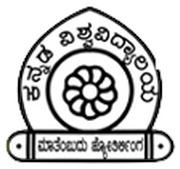
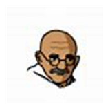
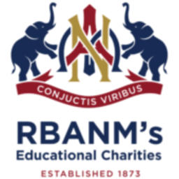
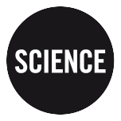
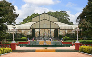
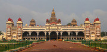
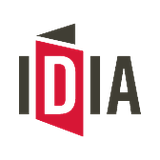

ಪಾಲುದಾರರು
ಗ್ರಂಥಾಲಯಗಳು, ವಿಶ್ವವಿದ್ಯಾಲಯಗಳು ಮತ್ತು ಸಮುದಾಯಗಳ ಜೊತೆಗೂಡಿ ಕಟ್ಟಿದ್ದು.
SOK ಡಿಜಿಟಲೀಕರಿಸುವ ಪ್ರತಿ ಸಂಗ್ರಹವೂ ಅದನ್ನು ಹೊಂದಿರುವ ಸಂಸ್ಥೆಗೇ ಸೇರುತ್ತದೆ. ಡಿಜಿಟಲೀಕರಣಕ್ಕೆ ಸಂಸ್ಥೆಗೆ ಸಮಯ ಮತ್ತು ಪ್ರವೇಶ ಬಿಟ್ಟು ಬೇರೆ ಖರ್ಚಿಲ್ಲ.
 ಭಾರತೀಯ ರಾಷ್ಟ್ರೀಯ ಕಾನೂನು ಶಾಲಾ ವಿಶ್ವವಿದ್ಯಾಲಯ33,000+ ಪುಸ್ತಕಗಳ ಡಿಜಿಟಲೀಕರಣ, 2022–2025
ಭಾರತೀಯ ರಾಷ್ಟ್ರೀಯ ಕಾನೂನು ಶಾಲಾ ವಿಶ್ವವಿದ್ಯಾಲಯ33,000+ ಪುಸ್ತಕಗಳ ಡಿಜಿಟಲೀಕರಣ, 2022–2025 ಭಾರತೀಯ ವಿಜ್ಞಾನ ಅಕಾಡೆಮಿSOK ಯ ಮೊದಲ ಯೋಜನೆ, 2018ರಿಂದ
ಭಾರತೀಯ ವಿಜ್ಞಾನ ಅಕಾಡೆಮಿSOK ಯ ಮೊದಲ ಯೋಜನೆ, 2018ರಿಂದ ಅಜೀಂ ಪ್ರೇಮ್ಜಿ ವಿಶ್ವವಿದ್ಯಾಲಯಗ್ರಂಥಾಲಯ ಮತ್ತು ಆರ್ಕೈವ್ ಡಿಜಿಟಲೀಕರಣಕ್ಕೆ ಒಡಂಬಡಿಕೆ
ಅಜೀಂ ಪ್ರೇಮ್ಜಿ ವಿಶ್ವವಿದ್ಯಾಲಯಗ್ರಂಥಾಲಯ ಮತ್ತು ಆರ್ಕೈವ್ ಡಿಜಿಟಲೀಕರಣಕ್ಕೆ ಒಡಂಬಡಿಕೆ
ಕನ್ನಡ ವಿಶ್ವವಿದ್ಯಾಲಯ, ಹಂಪಿಒಡಂಬಡಿಕೆ: ಪಿಎಚ್ಡಿ ಪ್ರಬಂಧಗಳು ಮತ್ತು ಅಪರೂಪದ ಪುಸ್ತಕಗಳು ರೋಜಾ ಮುತ್ತಯ್ಯ ಸಂಶೋಧನಾ ಗ್ರಂಥಾಲಯ, ಚೆನ್ನೈಸಂಗ್ರಹ ಡಿಜಿಟಲೀಕರಣ ಪಾಲುದಾರಡಾ. ಬಿ.ಆರ್. ಅಂಬೇಡ್ಕರ್ ವಿಶ್ವವಿದ್ಯಾಲಯ, ದೆಹಲಿಕಾನೂನು ಮತ್ತು ಹಕ್ಕುಸ್ವಾಮ್ಯ ಮಾರ್ಗದರ್ಶನ
ರೋಜಾ ಮುತ್ತಯ್ಯ ಸಂಶೋಧನಾ ಗ್ರಂಥಾಲಯ, ಚೆನ್ನೈಸಂಗ್ರಹ ಡಿಜಿಟಲೀಕರಣ ಪಾಲುದಾರಡಾ. ಬಿ.ಆರ್. ಅಂಬೇಡ್ಕರ್ ವಿಶ್ವವಿದ್ಯಾಲಯ, ದೆಹಲಿಕಾನೂನು ಮತ್ತು ಹಕ್ಕುಸ್ವಾಮ್ಯ ಮಾರ್ಗದರ್ಶನ ಕರ್ನಾಟಕ ಸಂಸ್ಕೃತ ವಿಶ್ವವಿದ್ಯಾಲಯಇಂಟರ್ನೆಟ್ ಆರ್ಕೈವ್ನಲ್ಲಿ 1,364 ಐಟಂಗಳು
ಕರ್ನಾಟಕ ಸಂಸ್ಕೃತ ವಿಶ್ವವಿದ್ಯಾಲಯಇಂಟರ್ನೆಟ್ ಆರ್ಕೈವ್ನಲ್ಲಿ 1,364 ಐಟಂಗಳು ವಿಜಯ ಸಂಜೆ ಕಾಲೇಜುಇಂಟರ್ನೆಟ್ ಆರ್ಕೈವ್ನಲ್ಲಿ 142 ಐಟಂಗಳು
ವಿಜಯ ಸಂಜೆ ಕಾಲೇಜುಇಂಟರ್ನೆಟ್ ಆರ್ಕೈವ್ನಲ್ಲಿ 142 ಐಟಂಗಳು ಕರ್ನಾಟಕ ಗಾಂಧಿ ಸ್ಮಾರಕ ನಿಧಿ11,700 ಪುಸ್ತಕಗಳ ಗ್ರಂಥಾಲಯ, 3 ತಿಂಗಳಲ್ಲಿ ಡಿಜಿಟಲೀಕರಣ
ಕರ್ನಾಟಕ ಗಾಂಧಿ ಸ್ಮಾರಕ ನಿಧಿ11,700 ಪುಸ್ತಕಗಳ ಗ್ರಂಥಾಲಯ, 3 ತಿಂಗಳಲ್ಲಿ ಡಿಜಿಟಲೀಕರಣತೆಲಂಗಾಣ ಗಾಂಧಿ ಸ್ಮಾರಕ ನಿಧಿಸಂಗ್ರಹ ಕೊಡುಗೆ ಪಾಲುದಾರ
ಆಂಧ್ರಪ್ರದೇಶ ಗಾಂಧಿ ಸ್ಮಾರಕ ನಿಧಿಸಂಗ್ರಹ ಕೊಡುಗೆ ಪಾಲುದಾರ
ರಾಷ್ಟ್ರೀಯ ಗಾಂಧಿ ವಸ್ತುಸಂಗ್ರಹಾಲಯ, ನವದೆಹಲಿಡಿಜಿಟಲೀಕರಿಸಿದ ಸಂಗ್ರಹದ ಸ್ವೀಕೃತದಾರ
ಗಾಂಧಿ ವಸ್ತುಸಂಗ್ರಹಾಲಯ, ಮದುರೈಡಿಜಿಟಲೀಕರಿಸಿದ ಸಂಗ್ರಹದ ಸ್ವೀಕೃತದಾರ
RBANM ಶೈಕ್ಷಣಿಕ ದತ್ತಿಗಳುಡಿಜಿಟಲ್ ಗ್ರಂಥಾಲಯ ಕೊಡುಗೆ ಮತ್ತು ಕಾರ್ಯಕ್ರಮ ಪಾಲುದಾರ
ಬೆಂಗಳೂರು ಸೈನ್ಸ್ ಗ್ಯಾಲರಿ20,000 ಪುಸ್ತಕಗಳ ಡಿಜಿಟಲ್ ಗ್ರಂಥಾಲಯ, 2025
ಲಾಲ್ಬಾಗ್ ಸಸ್ಯೋದ್ಯಾನ6,300 ಪುಸ್ತಕಗಳ ತೋಟಗಾರಿಕಾ ಗ್ರಂಥಾಲಯ SOCHARAಸಮುದಾಯ ಆರೋಗ್ಯ ಆರ್ಕೈವ್ ಡಿಜಿಟಲೀಕರಣ
SOCHARAಸಮುದಾಯ ಆರೋಗ್ಯ ಆರ್ಕೈವ್ ಡಿಜಿಟಲೀಕರಣ ವಿಶ್ವ ಕೊಂಕಣಿ ಕೇಂದ್ರ, ಮಂಗಳೂರುಸಂಗ್ರಹ ಡಿಜಿಟಲೀಕರಣ ಪಾಲುದಾರ
ವಿಶ್ವ ಕೊಂಕಣಿ ಕೇಂದ್ರ, ಮಂಗಳೂರುಸಂಗ್ರಹ ಡಿಜಿಟಲೀಕರಣ ಪಾಲುದಾರಲೋಕ ಶಿಕ್ಷಣ ಟ್ರಸ್ಟ್, ಹುಬ್ಬಳ್ಳಿಸಂಗ್ರಹ ಡಿಜಿಟಲೀಕರಣ ಪಾಲುದಾರ
 ನೀನಾಸಂ ಮತ್ತು ಅಕ್ಷರ ಪ್ರಕಾಶನಹೆಗ್ಗೋಡು ಸಾಹಿತ್ಯ ಆರ್ಕೈವ್
ನೀನಾಸಂ ಮತ್ತು ಅಕ್ಷರ ಪ್ರಕಾಶನಹೆಗ್ಗೋಡು ಸಾಹಿತ್ಯ ಆರ್ಕೈವ್ ಕರ್ನಾಟಕ ಅರೆಭಾಷೆ ಸಂಸ್ಕೃತಿ ಮತ್ತು ಸಾಹಿತ್ಯ ಅಕಾಡೆಮಿಇಂಟರ್ನೆಟ್ ಆರ್ಕೈವ್ನಲ್ಲಿ 263 ಐಟಂಗಳು
ಕರ್ನಾಟಕ ಅರೆಭಾಷೆ ಸಂಸ್ಕೃತಿ ಮತ್ತು ಸಾಹಿತ್ಯ ಅಕಾಡೆಮಿಇಂಟರ್ನೆಟ್ ಆರ್ಕೈವ್ನಲ್ಲಿ 263 ಐಟಂಗಳು ಬಿ.ಎಂ. ಶ್ರೀ ಪ್ರತಿಷ್ಠಾನಕನ್ನಡ ಸಾಹಿತ್ಯ ಆರ್ಕೈವ್ನವಕರ್ನಾಟಕಪ್ರಕಾಶನ ಆರ್ಕೈವ್ ಪಾಲುದಾರ
ಬಿ.ಎಂ. ಶ್ರೀ ಪ್ರತಿಷ್ಠಾನಕನ್ನಡ ಸಾಹಿತ್ಯ ಆರ್ಕೈವ್ನವಕರ್ನಾಟಕಪ್ರಕಾಶನ ಆರ್ಕೈವ್ ಪಾಲುದಾರಉದಯ ಭಾನು ಕಲಾ ಸಂಘಸಾಂಸ್ಕೃತಿಕ ಆರ್ಕೈವ್ ಪಾಲುದಾರ
 ಯುನೈಟೆಡ್ ಲಾಡ್ಜ್ ಆಫ್ ಥಿಯೊಸೊಫಿಸ್ಟ್ಸ್ಸಂಗ್ರಹ ಡಿಜಿಟಲೀಕರಣ ಪಾಲುದಾರ
ಯುನೈಟೆಡ್ ಲಾಡ್ಜ್ ಆಫ್ ಥಿಯೊಸೊಫಿಸ್ಟ್ಸ್ಸಂಗ್ರಹ ಡಿಜಿಟಲೀಕರಣ ಪಾಲುದಾರ ಶ್ರೀ ಶಂಕರ ಕಾಲೇಜು, ನವಲಗುಂದಸಂಗ್ರಹ ಡಿಜಿಟಲೀಕರಣ ಪಾಲುದಾರ
ಶ್ರೀ ಶಂಕರ ಕಾಲೇಜು, ನವಲಗುಂದಸಂಗ್ರಹ ಡಿಜಿಟಲೀಕರಣ ಪಾಲುದಾರ ಕರ್ನಾಟಕ ಇತಿಹಾಸ ಅಕಾಡೆಮಿಇಂಟರ್ನೆಟ್ ಆರ್ಕೈವ್ನಲ್ಲಿ 33 ಐಟಂಗಳು
ಕರ್ನಾಟಕ ಇತಿಹಾಸ ಅಕಾಡೆಮಿಇಂಟರ್ನೆಟ್ ಆರ್ಕೈವ್ನಲ್ಲಿ 33 ಐಟಂಗಳು ಕರ್ನಾಟಕ ತುಳು ಸಾಹಿತ್ಯ ಅಕಾಡೆಮಿಇಂಟರ್ನೆಟ್ ಆರ್ಕೈವ್ನಲ್ಲಿ 265 ಐಟಂಗಳು
ಕರ್ನಾಟಕ ತುಳು ಸಾಹಿತ್ಯ ಅಕಾಡೆಮಿಇಂಟರ್ನೆಟ್ ಆರ್ಕೈವ್ನಲ್ಲಿ 265 ಐಟಂಗಳು ಕರ್ನಾಟಕ ಪುರಾತತ್ವ ಇಲಾಖೆಒಡಂಬಡಿಕೆ: ಮೈಸೂರಿನ ಪರಂಪರೆ ಗ್ರಂಥಾಲಯಅನಾಜಿ ಗ್ರಂಥ ಸಂಗ್ರಹಇಂಟರ್ನೆಟ್ ಆರ್ಕೈವ್ನಲ್ಲಿ 50 ಐಟಂಗಳು
ಕರ್ನಾಟಕ ಪುರಾತತ್ವ ಇಲಾಖೆಒಡಂಬಡಿಕೆ: ಮೈಸೂರಿನ ಪರಂಪರೆ ಗ್ರಂಥಾಲಯಅನಾಜಿ ಗ್ರಂಥ ಸಂಗ್ರಹಇಂಟರ್ನೆಟ್ ಆರ್ಕೈವ್ನಲ್ಲಿ 50 ಐಟಂಗಳು ಬೆಂಗಳೂರು ವಸ್ತುಸಂಗ್ರಹಾಲಯ ಗ್ರಂಥಾಲಯಇಂಟರ್ನೆಟ್ ಆರ್ಕೈವ್ನಲ್ಲಿ ಸಂಗ್ರಹ ರಚಿಸಲಾಗಿದೆ
ಬೆಂಗಳೂರು ವಸ್ತುಸಂಗ್ರಹಾಲಯ ಗ್ರಂಥಾಲಯಇಂಟರ್ನೆಟ್ ಆರ್ಕೈವ್ನಲ್ಲಿ ಸಂಗ್ರಹ ರಚಿಸಲಾಗಿದೆ
ಮೈಸೂರು ಅರಮನೆ ಗ್ರಂಥಾಲಯಇಂಟರ್ನೆಟ್ ಆರ್ಕೈವ್ನಲ್ಲಿ ಸಂಗ್ರಹ ರಚಿಸಲಾಗಿದೆಕಲಾನಿಧಿ ಸ್ಟುಡಿಯೋ ಆರ್ಕೈವ್ಇಂಟರ್ನೆಟ್ ಆರ್ಕೈವ್ನಲ್ಲಿ ಸಂಗ್ರಹ ರಚಿಸಲಾಗಿದೆರಂಗಮಂಚ ಆರ್ಕೈವ್ಇಂಟರ್ನೆಟ್ ಆರ್ಕೈವ್ನಲ್ಲಿ ಸಂಗ್ರಹ ರಚಿಸಲಾಗಿದೆ
IDIAಕಾನೂನು ವಿದ್ಯಾರ್ಥಿಗಳಿಗೆ ಬ್ರೈಲ್ ಮತ್ತು DAISY ಪ್ರವೇಶ Internet Archiveಮುಕ್ತ ಮೂಲದ ಸ್ಕ್ಯಾನರ್ ವಿನ್ಯಾಸ ಮತ್ತು ಹೋಸ್ಟಿಂಗ್
Internet Archiveಮುಕ್ತ ಮೂಲದ ಸ್ಕ್ಯಾನರ್ ವಿನ್ಯಾಸ ಮತ್ತು ಹೋಸ್ಟಿಂಗ್ Indian Kanoonಒಸಿಆರ್ ಮತ್ತು ಹುಡುಕಾಟ ಮೂಲಸೌಕರ್ಯ, ಡಾ. ಸುಶಾಂತ್ ಸಿನ್ಹಾ ನೇತೃತ್ವ
Indian Kanoonಒಸಿಆರ್ ಮತ್ತು ಹುಡುಕಾಟ ಮೂಲಸೌಕರ್ಯ, ಡಾ. ಸುಶಾಂತ್ ಸಿನ್ಹಾ ನೇತೃತ್ವ